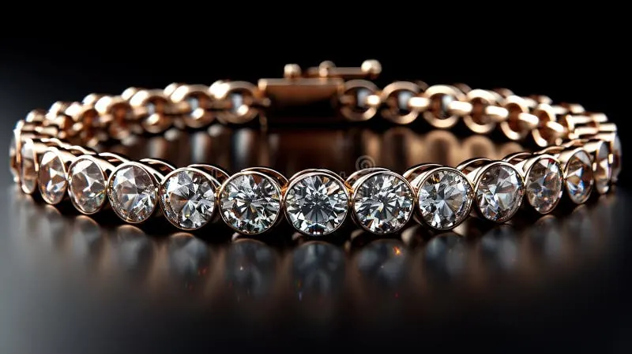

紅鑽與變色鑽石：最稀有的色彩傳說
紅鑽是鑽石世界最接近「傳說」的存在——它不是粉鑽的升級版，而是顏色科學的極端狀態。

核心定義
紅鑽（red diamond）是彩鑽中極致稀有的存在：GIA 統計中，全球經認證的純紅鑽只有個位數到數十顆之譜，大部分「紅鑽」其實是粉紅鑽或褐紅鑽。純正紅色的鑽石，被視為寶石界的聖杯。
紅鑽的紅與粉鑽同源——晶格塑性變形——但變形程度更劇烈，讓吸收曲線跨入更深的紅色區域。它幾乎只產於澳洲阿蓋爾礦，2015 年阿蓋爾礦區發現的 12.76 克拉紅鑽「Argyle Everglow」轟動全球，阿蓋爾礦 2020 年關閉後，紅鑽更是「買少見少」。
特徵與分類
| 名稱 | 稀有度 | 特徵 |
|---|---|---|
| 純紅鑽 red | 極度稀有 | 無其他色調的純紅 |
| 粉紅鑽 pink | 極稀有 | 粉紅為主調 |
| 褐紅鑽 brownish red | 稀有 | 帶褐色調的紅 |
| 變色鑽石 | 極稀有 | 不同光源呈現不同顏色 |
「變色鑽石」（color change diamond）更稀有：它在日光下呈現一色、在白熾燈下呈現另一色，原理與亞歷山大石相同——晶格缺陷造成兩個不同的吸收窗口，光源色溫不同，看到的顏色就不同。典型組合是灰綠/粉紫、或藍灰/紫紅。
科學原理
變色效應的科學是「色溫」：日光色溫高（偏藍）、白熾燈色溫低（偏紅）。當寶石同時吸收兩個波段的互補色光，光源偏藍時顯示 A 色、偏紅時顯示 B 色。亞歷山大石（金綠寶石）是教科書範例，鑽石中也有罕見案例。
紅鑽的晶格變形是「塑性變形」：地幔中鑽石被擠壓滑移，碳鍵排列錯位，產生特定波長吸收。變形越集中、越劇烈，顏色越偏紅——這是顏色科學中的極端狀態。
鑑定與鑑別方法
- 認證為王：紅鑽必須附 GIA 彩鑽證書，顏色分級有嚴格標準
- 用分光儀確認吸收曲線，排除「粉鑽被誤稱紅鑽」
- 區分天然與處理：輻照可做出綠色、HPHT 可改色，證書必須標示
- 變色鑽石要在兩種標準光源（日光燈/白熾燈）下各測一次
- 注意仿品：合成紅鑽與鍍膜鑽石偶現市場
市場行情與保養建議
紅鑽與優質變色鑽石幾乎不上零售櫃檯，主要透過拍賣與私人洽購流通，價格以「天價」形容毫不誇張——阿蓋爾出產的優質紅鑽，拍賣單克拉價常達數百萬美元等級。
對一般藏家，與其追逐紅鑽，不如研究粉鑽與變色鑽石的次級品類；對投資者，紅鑽是「十年難得一見」的標的，出手前務必讓獨立實驗室背書。
常見誤區
GIA 對紅鑽的定義極嚴格：主色必須是紅色，不得混入粉、褐、橙等色調。市面上九成以上的「紅鑽」其實是粉紅或褐紅——認證字樣說了算。
變色是「現象」，不是「寶石種」。鑽石、藍寶石、石榴石都可能變色，亞歷山大石只是最有名的例子。變色鑽石是鑽石界的奇蹟，但與亞歷山大石是兩種寶石。
冷知識
澳洲阿蓋爾礦產出了全球絕大多數的粉鑽與紅鑽，2020 年關閉後，這類極端彩鑽的供應幾乎斷炊——「絕版」成了價格催化劑。
在 LED 下、白熾燈下、黃昏的自然光下，它會呈現不同顏色——這不是魔法，是吸收光譜與光源色溫的數學遊戲。
反直覺觀點
因為太稀有，偽稱、誤稱層出不窮；正因為值天價，更需要實驗室認證而非肉眼。稀有與風險，常常是同一枚硬幣的兩面。
變色現象讓寶石在不同光下呈現雙重身份，敘事性與觀賞性倍增——「一眼看盡」的寶石，永遠不如「藏著驚喜」的寶石有故事。